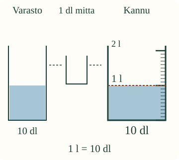
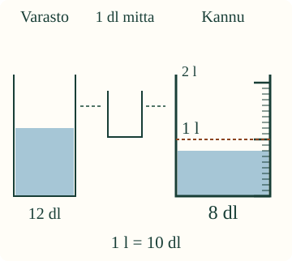

Litra ja desilitra
Loikka tarvitsee litran vettä. Kannussa on 8 dl. Riittääkö se?
Tiedän, että litrassa on kymmenen desilitraa. Mittaan määrää desilitran mitalla.
Kymmenen täyttä mittaa
Desilitra merkitään dl. Yksi täysi desilitran mitta on 1 dl. Litra merkitään l. Kymmenen täyttä desilitran mittaa on yksi litra: 10 dl = 1 l.

Iso luku ei yksin ratkaise

8 dl on vähemmän kuin 1 l, vaikka 8 on suurempi luku kuin 1. Litra tarkoittaa kymmentä desilitraa.
Ennusta: montako desilitraa vielä tarvitaan litran viivaan?
Korjaa reseptin määrä
Resepti: 1 l
Yksi painallus siirtää yhden täyden desilitran.
Voit lisätä tai palauttaa vettä.
Sama määrä reseptissä
8 dl ja kaksi täyttä desilitraa lisää on 10 dl eli 1 l. Varaston vesi vähenee saman verran kuin kannuun siirtyy. Vettä ei synny lisää.
Apua kaavioon ja toistoon
Kuvassa varasto, yhden desilitran mitta ja kannu ovat kaavioita. Täytä mitta ja siirrä koko annos. Pinta, viivat ja määrän luku näyttävät saman määrän. Kaadon aikana voit käyttää askelta. Harjoituksen ohjauksen Tauko pysäyttää esityksen; Jatka jatkaa siitä ja Alusta palauttaa alun. Opetusvaiheen vaihtaminen pysäyttää kaadon; palattuasi voit jatkaa kohdasta painamalla Askel kaadossa. Nämä painikkeet ovat sivun harjoituksen ohjauksessa.
Kannu vetää enintään 2 l. Se kertoo tilavuuden täytenä, ei sisällä nyt olevan veden määrää. Yksi asteikon väli on 1 dl; 1 l viiva on kymmenen välin korkeudella tyhjästä.
Kokeile ilman ruutua ja tutki lisää
Kaatakaa aikuisen kanssa vettä desilitran tasamitalla litran mittakannuun, tarjottimen päällä. Jokainen täysi annos on saman kokoinen. Arvioikaa ennen mittaamista, montako annosta tarvitaan. Kokeilkaa myös, montako täyttä 2 dl annosta litrasta tulee, jos tällainen mitta on käytettävissä. Vettä ei tarvitse maistaa.
Opettajalle: tavoite, malli ja rajat
Vuosiluokat 1–2; concept/atomic. Tavoite: litra ja desilitra yksikköinä. Vaadittu JA-ryhmä M-MEAS-08 ja M-MEAS-01. Ei uutta jako-, murtoluku-, millilitra- tai desimaalivaatimusta. Yksikkösuhde annetaan kuvana ja merkintänä. Esineiden nimeämistä, puheen vahvistamista tai erillisiä laskentataputuksia ei tarvita. Aikuinen voi lukea.
Kaaviomalli jakaa yhden mitallisen siirron kahteen osaan: mitta täyttyy lähtöastiasta, sitten se tyhjenee kohdeastiaan. Varasto, mitta ja kannu sisältävät aina yhteensä 20 dl. Palautus toimii toiseen suuntaan. Katkoviivat näyttävät tiedon kulkureitin, eivät todellista vesisuihkua, painovoimaa tai astian kallistusta. Astioiden näyttökoot eivät ole keskenään todellisessa mittakaavassa. Suoraseinäisen kannun asteikon väleihin liittyvä tilavuus on kuitenkin mallissa täsmällinen.
Yksi siirto kestää mallissa 800 ms; askel nopeuttaa katsomista. Aika ei ole mitattu kaatoaika. Tarkistus on siirron aikana pois käytöstä. Tauko pysäyttää saman keskeneräisen siirron; alustus ja poistuminen peruuttavat sen ja siivoavat piirtosilmukan. Apulinja ei muuta määrää tai tarkistuspalautetta.
Tarkistus koskee tuettua ruutumallia. Se ei osoita oikean tasamitan täyttöä tai lukemista, fyysistä kaatamista, itsenäisyyttä, säilyvyyttä tai oppimisvaikutusta. Ei pisteitä, tallennusta tai hallintamerkintöjä. Litraa ei rinnasteta kilogrammaan.
Lopuksi
Miksi 1 l ja 8 dl pitää verrata yksiköt huomaten?